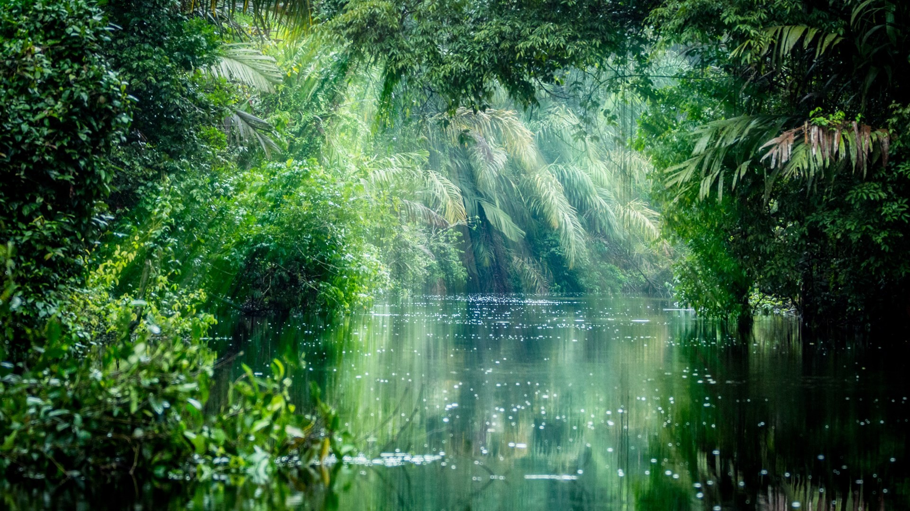

Overview

Brazil's climate is predominantly tropical, with variations ranging from equatorial in the Amazon Basin to temperate in the southern regions. The country experiences significant rainfall, especially in the Amazon rainforest, which plays a crucial role in global climate regulation.
Regional Climate Variations
- Amazon Basin: Hot and humid year-round with heavy rainfall.
- Northeast: Semi-arid with distinct wet and dry seasons.
- Southeast: Mild winters and hot summers, with moderate rainfall.
- South: Temperate climate with cooler winters and occasional frost.
Climate Change Impact
Brazil faces challenges related to climate change, including deforestation in the Amazon, which affects local and global weather patterns. Efforts are being made to promote sustainable practices and reduce greenhouse gas emissions.
Interesting Fact
Brazil is home to the Amazon rainforest, which produces about 20% of the world's oxygen and is often referred to as the "lungs of the Earth."
For further information about Brazil's climate, Click Me.
Natural Features of Brazil

Brazil boasts a diverse range of natural features, including the Amazon rainforest, Pantanal wetlands, Iguazu Falls, and the extensive coastline along the Atlantic Ocean. These features contribute to Brazil's rich biodiversity and ecological significance.
Major Natural Features
Major Natural Landmarks

Amazon Rainforest
The largest tropical rainforest in the world.

Pantanal
The world’s largest tropical wetland area.

Iguazu Falls
One of the largest and most impressive waterfall systems globally.

Lençóis Maranhenses
A unique landscape of white sand dunes and blue lagoons.
Conservation Efforts
Brazil has established numerous national parks and protected areas to conserve its natural heritage. Efforts are ongoing to combat deforestation and promote sustainable tourism in these regions.
Interesting Fact
The Amazon River, which flows through Brazil, is the second-longest river in the world and has the largest drainage basin globally.

Amazon Rainforest
The largest tropical rainforest in the world.
Pantanal
The world’s largest tropical wetland area.
Iguazu Falls
One of the largest and most impressive waterfall systems globally.
Lençóis Maranhenses
A unique landscape of white sand dunes and blue lagoons.
Conservation Efforts
Brazil has established numerous national parks and protected areas to conserve its natural heritage. Efforts are ongoing to combat deforestation and promote sustainable tourism in these regions.
Interesting Fact
The Amazon River, which flows through Brazil, is the second-longest river in the world and has the largest drainage basin globally.
For further information on Brazil's natural features, Click Me.